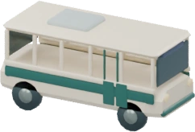
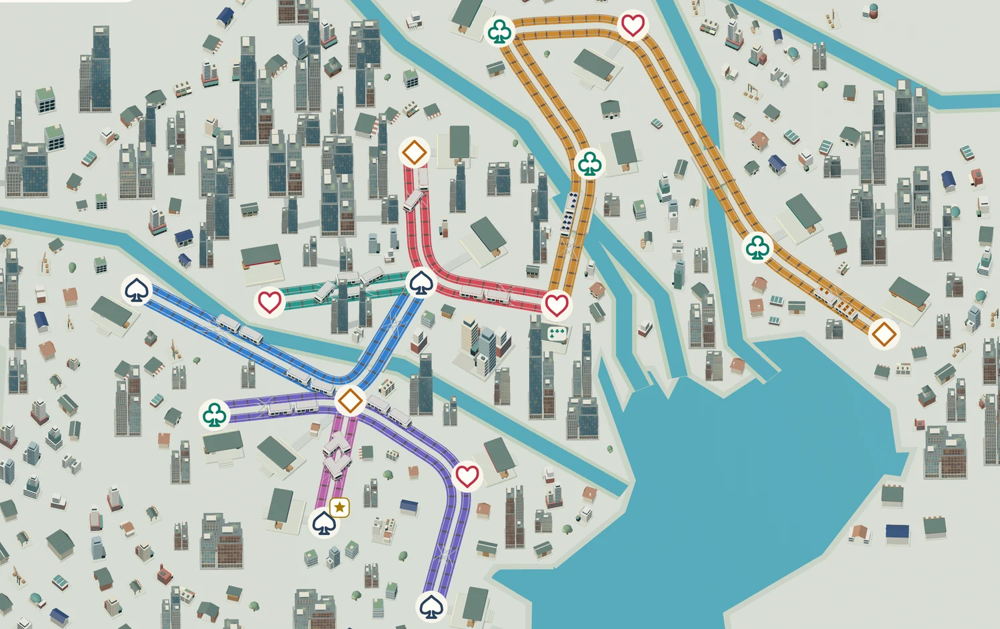
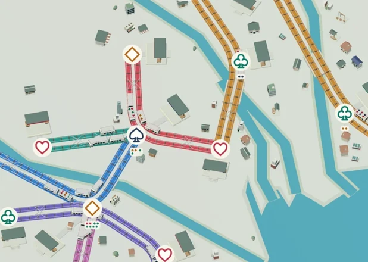
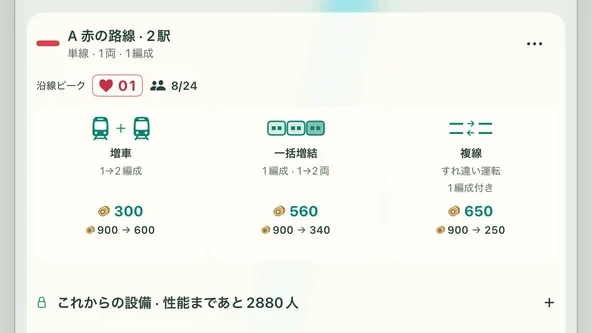
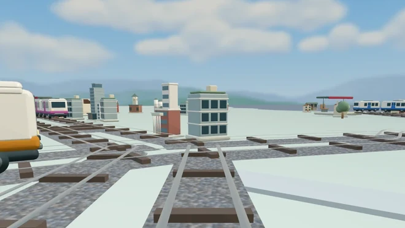
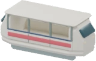

北海道
駅前連絡バス
同じ岸にある駅どうしを小さなバスで往復。最大4台をどこに回すかはあなた次第。
iPhone・iPad 向け鉄道パズル
ハートの住宅地から、スペードのオフィス街へ。
指で駅をつなぐと列車が走り、
人が集まる駅前に建物が増えていきます。
日本向け無料アプリ 配信準備中

プレイ映像
21秒 音声なし
遊び方

乗客が目指すのは、自分と同じマークの駅。路線を交わらせると、乗客は途中の駅で乗り換えます。

列車を増やすか、一度に乗れる人数を増やすか。ホームに並ぶマークを見ながら、運賃の使い道を選びます。

複線化したら、列車を選んで運転席へ。さっき地図でつないだ駅が、今度は線路の先に見えてきます。
ご当地の交通
地形が変われば、駅の結び方も変わります。その土地ならではの乗り物を、いつもの鉄道網に加えてみましょう。

北海道
同じ岸にある駅どうしを小さなバスで往復。最大4台をどこに回すかはあなた次第。

沖縄
街の上を走る6席のモノレール。鉄道とは別に2路線までつくれます。
アプリサポート
地図上で出発駅に指を置き、そのまま別の駅まで動かして離します。列車は自動で走り始めます。
「増強」で路線を複線化し、走っている列車を選んで「運転席へ」を押してください。左上のミニマップから地図に戻れます。
運行は端末に自動保存されます。タイトル画面の「続きから」を選んでください。アプリを削除すると、端末内の保存データも消去されます。
メールに「レールカルテット」、お使いの機種、状況がわかる画面や操作を書いてお送りください。
serpenternapp@gmail.com